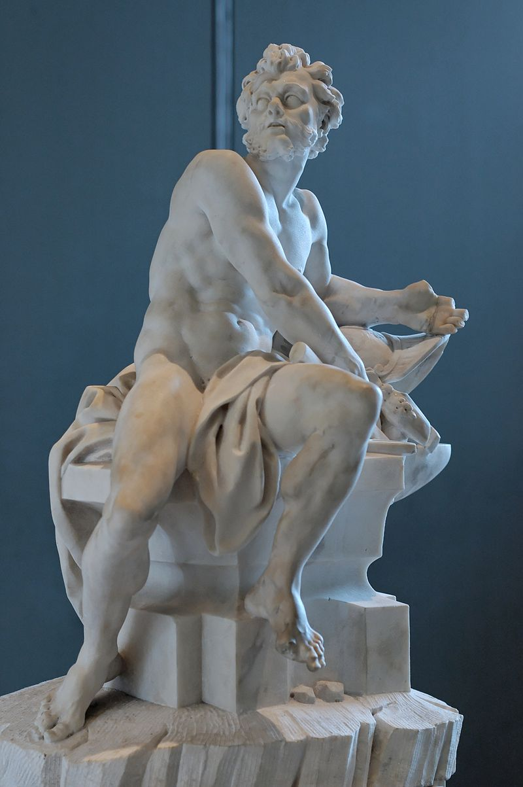

| Deity | Description |
|---|---|
| Aphrodite (Ἀφροδίτη, Aphroditē)
Goddess of beauty, love, desire, and pleasure. In Hesiod's Theogony (188-206), she was born from sea-foam and the severed genitals of Uranus; in Homer's Iliad (5.370-417), she is daughter of Zeus and Dione. She was married to Hephaestus, but bore him no children. She had many lovers, most notably Ares, to whom she bore Harmonia, Phobos, and Deimos. She was also a lover to Adonis and Anchises, to whom she bore Aeneas. She is usually depicted as a naked or semi-nude beautiful woman. Her symbols include the magical girdle, myrtle, roses, and the scallop shell. Her sacred animals include doves and sparrows. Her Roman counterpart is Venus. |
|
| Apollo (Ἀπόλλων, Apóllōn)
God of music, arts, knowledge, healing, plague, prophecy, poetry, manly beauty, and archery. He is the son of Zeus and Leto, and the twin brother of Artemis. Both Apollo and Artemis use a bow and arrow. Apollo is depicted as young, beardless, handsome and athletic. In myth, he can be cruel and destructive, and his love affairs are rarely happy. He is often accompanied by the Muses. His most famous temple is in Delphi, where he established his oracular shrine. His signs and symbols include the laurel wreath, bow and arrow, and lyre. His sacred animals include roe deer, swans, and pythons. Some late Roman and Greek poetry and mythography identifies him as a sun-god, equivalent to Roman Sol and Greek Helios. |
|

|
Ares (Ἄρης, Árēs)
God of courage, war, bloodshed, and violence. The son of Zeus and Hera, he was depicted as a beardless youth, either nude with a helmet and spear or sword, or as an armed warrior. Homer portrays him as moody and unreliable, and as being the most unpopular god on earth and Olympus (Iliad 5.890-1). He generally represents the chaos of war in contrast to Athena, a goddess of military strategy and skill. Ares is known for cuckolding his brother Hephaestus, conducting an affair with his wife Aphrodite. His sacred animals include vultures, venomous snakes, dogs, and boars. His Roman counterpart Mars by contrast was regarded as the dignified ancestor of the Roman people. |
| Artemis (Ἄρτεμις, Ártemis)
Virgin goddess of the hunt, wilderness, animals, the Moon and young girls. Both she and Apollo are archery gods. She is the daughter of Zeus and Leto, and twin sister of Apollo. In art she is often depicted as a young woman dressed in a short knee-length chiton and equipped with a silver hunting bow and a quiver of arrows. Her attributes include hunting knives and spears, animal pelts, deer and other wild animals. Her sacred animal is a deer. Her Roman counterpart is Diana. |
|

|
Athena (Ἀθηνᾶ, Athēnâ)
Goddess of reason, wisdom, intelligence, skill, peace, warfare, battle strategy, and handicrafts. According to most traditions, she was born from Zeus's forehead, fully formed and armored, after Zeus swallowed her mother, Metis, whole. She is depicted as being crowned with a crested helm, armed with shield and spear, and wearing the aegis over a long dress. Poets describe her as "grey-eyed" or having especially bright, keen eyes. She is a special patron of heroes such as Odysseus. She is the patron of the city Athens (from which she takes her name) and is attributed to various inventions in arts and literature. Her symbol is the olive tree. She is commonly shown as being accompanied by her sacred animal, the owl. Her Roman counterpart is Minerva. |

|
Demeter (Δημήτηρ, Dēmḗtēr)
Goddess of grain, agriculture, harvest, growth, and nourishment. Demeter, whose Roman counterpart is Ceres, is a daughter of Cronus and Rhea, and was swallowed and then regurgitated by her father. She is a sister of Zeus, by whom she bore Persephone, who is also known as Kore, i.e. "the girl." One of the central myths associated with Demeter involves Hades' abduction of Persephone and Demeter's lengthy search for her. Demeter is one of the main deities of the Eleusinian Mysteries, in which the rites seemed to center around Demeter's search for and reunion with her daughter, which symbolized both the rebirth of crops in spring and the rebirth of the initiates after death. She is depicted as a mature woman, often crowned and holding sheafs of wheat and a torch. Her symbols are the cornucopia, wheat-ears, the winged serpent, and the lotus staff. Her sacred animals include pigs and snakes. |
| Dionysus (Διόνυσος, Diónusos)
God of wine, fruitfulness, parties, festivals, madness, chaos, drunkenness, vegetation, ecstasy, and the theater. He is the twice-born son of Zeus and Semele, in that Zeus snatched him from his mother's womb and stitched Dionysus into his own thigh and carried him until he was ready to be born. In art he is depicted as either an older bearded god (particularly before 430 BC) or an effeminate, long-haired youth (particularly after 430 BC). His attributes include the thyrsus, a drinking cup, the grape vine, and a crown of ivy. He is often in the company of his thiasos, a group of attendants including satyrs, maenads, and his old tutor Silenus. The consort of Dionysus was Ariadne. It was once held that Dionysius was a later addition to the Greek pantheon, but the discovery of Linear B tablets confirm his status as a deity from an early period. Bacchus was another name for him in Greek, and came into common usage among the Romans. His sacred animals include dolphins, serpents, tigers, and donkeys. |
|

|
Hades (ᾍδης, Háidēs)/Pluto (Πλούτων, Ploutōn)
King of the underworld and the dead. He is also a god of wealth. His consort is Persephone. His attributes are the drinking horn or cornucopia, key, sceptre, and the three-headed dog Cerberus. His sacred animals include the screech owl. He was one of three sons of Cronus and Rhea, and thus sovereign over one of the three realms of the universe, the underworld. As a chthonic god, however, his place among the Olympians is ambiguous. In the mystery religions and Athenian literature, Plouton ("the Rich one") was his preferred name, because of the idea that all riches came from the earth. The term Hades was used in this literature to refer to the underworld itself. The Romans translated Plouton as Dis Pater ("the Rich Father") or Pluto. |
|  | Hephaestus (Ἥφαιστος, Hḗphaistos)
God of fire, metalworking, and crafts. Either the son of Zeus and Hera or Hera alone, he is the smith of the gods and the husband of the adulterous Aphrodite. He was usually depicted as a bearded, crippled man with hammer, tongs, and anvil, and sometimes riding a donkey. His sacred animals include the donkey, the guard dog, and the crane. Among his creations was the armor of Achilles. Hephaestus used the fire of the forge as a creative force, but his Roman counterpart Vulcan was feared for his destructive potential and associated with the volcanic power of the earth. |
| Hera (Ἥρα, Hḗra)
Queen of the gods, and goddess of women, marriage, childbirth, heirs, kings, and empires. She is the goddess of the sky, the wife and sister of Zeus, and the daughter of Cronus and Rhea. She was usually depicted as a regal woman in the prime of her life, wearing a diadem and veil and holding a lotus-tipped staff. Although she is the goddess of marriage, Zeus's many infidelities drive her to jealousy and vengefulness. Her sacred animals include the heifer, the peacock, and the cuckoo. Her Roman counterpart is Juno. |
|
| Hermes (Ἑρμῆς, Hērmês)
God of boundaries, travel, trade, communication, language, writing, cunning and thieves. Hermes was also responsible for protecting livestock and presided over the spheres associated with fertility, music, luck, and deception. The son of Zeus and Maia, Hermes is the messenger of the gods, and a psychopomp who leads the souls of the dead into the afterlife. He was depicted either as a handsome and athletic beardless youth, or as an older bearded man. His attributes include the herald's wand or caduceus, winged sandals, and a traveler's cap. His sacred animals include the tortoise. His Roman counterpart is Mercury. |
|

|
Hestia (Ἑστία, Hestía)
Virgin goddess of the hearth, home, domesticity and chastity. She is a daughter of Rhea and Cronus, and a sister of Zeus. Not often identifiable in Greek art, she appeared as a modestly veiled woman. Her symbols are the hearth and kettle. She plays little role in Greek myths, and although she is omitted in some lists of the twelve Olympians in favour of Dionysus, no ancient tale tells of her abdicating or giving her seat to Dionysus. Her Roman counterpart Vesta, however, was a major deity of the Roman state. |
| Persephone (Περσεφόνη, Persephónē)
Goddess of spring, Queen of the Underworld, wife of Hades and daughter of Demeter and Zeus. Her symbols include the pomegranate, grain, torches, wheat and the asphodelus. After her abduction by Hades, she was forced to split the year between the world of the dead with her husband and the world of the living with her mother. She was worshipped in conjunction with Demeter, especially in the Eleusinian Mysteries. In ancient art she is usually depicted as a young woman, usually in the scene of her abduction. |
|
| Poseidon (Ποσειδῶν, Poseidôn)
God of the sea, rivers, floods, droughts, and earthquakes. He is a son of Cronus and Rhea, and the brother of Zeus and Hades. He rules one of the three realms of the universe, as king of the sea and the waters. In art he is depicted as a mature man of sturdy build, often with a luxuriant beard, and holding a trident. His sacred animals include the horse and the dolphin. His wedding with Amphitrite is often presented as a triumphal procession. In some stories he rapes Medusa, leading to her transformation into a hideous Gorgon and also to the birth of their two children, Pegasus and Chrysaor. His Roman counterpart is Neptune. |
|

|
Zeus (Ζεύς, Zeús)
King of the gods, ruler of Mount Olympus, and god of the sky, weather, thunder, lightning, law, order, and justice. He is the youngest son of Cronus and Rhea. He overthrew Cronus and gained the sovereignty of heaven for himself. In art he is depicted as a regal, mature man with a sturdy figure and dark beard. His usual attributes are the royal scepter and the lightning bolt. His sacred animals include the eagle and the bull. His Roman counterpart is Jupiter, also known as Jove. |